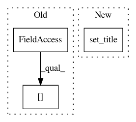

71b1e873e70dca43cd12870d4c0f497015f41970,examples/combine/plot_comparison_combine.py,,plot_resampling,#Any#Any#Any#Any#,62
Before Change
X_res, y_res = sampling.fit_resample(X, y)
ax.scatter(X_res[:, 0], X_res[:, 1], c=y_res, alpha=0.8, edgecolor="k")
// make nice plotting
ax.spines["top"].set_visible(False)
ax.spines["right"].set_visible(False)
ax.get_xaxis().tick_bottom()
ax.get_yaxis().tick_left()
After Change
X_res, y_res = sampler.fit_resample(X, y)
ax.scatter(X_res[:, 0], X_res[:, 1], c=y_res, alpha=0.8, edgecolor="k")
sns.despine(ax=ax, offset=10)
ax.set_title(f"Decision function for {sampler.__class__.__name__}")
return Counter(y_res)
// %% [markdown]
In pattern: SUPERPATTERN
Frequency: 5
Non-data size: 3
Instances
Project Name: scikit-learn-contrib/imbalanced-learn
Commit Name: 71b1e873e70dca43cd12870d4c0f497015f41970
Time: 2021-02-17
Author: g.lemaitre58@gmail.com
File Name: examples/combine/plot_comparison_combine.py
Class Name:
Method Name: plot_resampling
Project Name: rtavenar/tslearn
Commit Name: 10932ba9be0a77cf5cf899d4f28981dde82b6410
Time: 2020-06-07
Author: givdwiel.vandewiele@ugent.be
File Name: tslearn/docs/examples/classification/plot_shapelet_distances.py
Class Name:
Method Name:
Project Name: scikit-learn-contrib/imbalanced-learn
Commit Name: 153f6e0ff5729fc22b68d5f6e0fd05edf96d8c2c
Time: 2019-11-17
Author: g.lemaitre58@gmail.com
File Name: examples/datasets/plot_make_imbalance.py
Class Name:
Method Name:
Project Name: AllenCellModeling/pytorch_fnet
Commit Name: d632a61fc84c50fedc9706466fd26bc1e544d46e
Time: 2017-06-30
Author: chek.o@outlook.com
File Name: gen_util.py
Class Name:
Method Name: display_visual_eval_images
Project Name: scikit-learn-contrib/imbalanced-learn
Commit Name: 71b1e873e70dca43cd12870d4c0f497015f41970
Time: 2021-02-17
Author: g.lemaitre58@gmail.com
File Name: examples/datasets/plot_make_imbalance.py
Class Name:
Method Name: